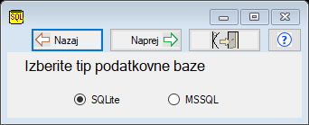

Izbira strežnika
Program Tangenta, je koncipiran tako, da lahko raste z vami tako kot vaše podjetje.
Vsak začetek je težak in podjetniki začetniki za pisanje računov in ponudb običajno
uporabljajo pisarniška orodja kot so Excel ali Word. Ko podjetje zraste pa nastane potreba
po programu za vodenju poslovanja (fakturiranje, vodenje strank, izdaja ponudb..),
ki dela s podatkovno bazo.
Ideja tega programa je, da podjetnik že v samem začetku gradi bazo podatkov o svojih strankah,
izdanih računih, ponudbah itd..
To pa je tisto, zakar je namenjen program TANGENTA
V začetni podjetniški fazi, ko ste sami ali vas je samo nekaj zaposlenih je najbolj primeren v program Tangenta integriran strežnik SQLite.
SQLite podatkovna baza je samostojna datoteka, ki jo morate skrbno hraniti.
Seveda pa lahko že takoj program Tangenta povežete MSSQL strežnikom, kar pa zahteva dodatna računalniška znanja.
